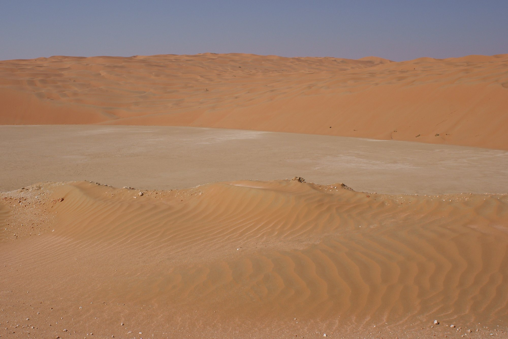
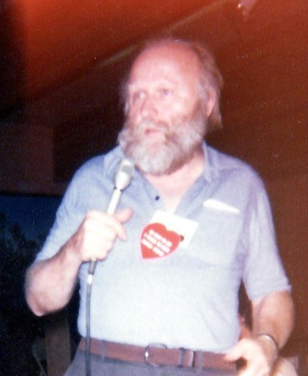
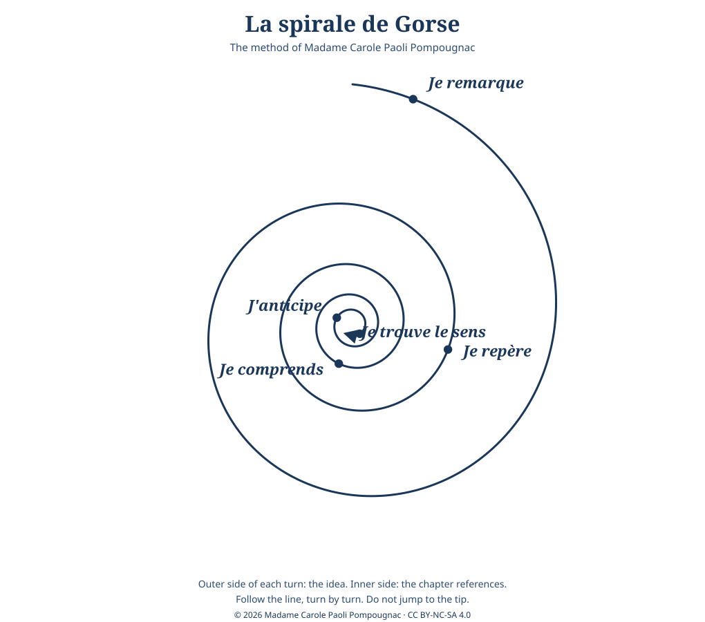

Anglais · Première technologique · lycée général et technologique · LVA and LVB · B1-B2 · Lesson 1 of 8
Lesson 1. A Planet Called Dune
Step of the problématique: Je remarque. What do we notice about a world where water is the measure of everything?
This lesson includes the diagnostic assessment (not graded: a positioning at A2, B1 or B2 for each skill).
Timing (55 minutes, timed on 52)
| Stage | Time | Activity | Skill |
|---|---|---|---|
| 1 | 5 min | Image without a caption. What do you see? Is it a place to live? Each student says one word. | EOI |
| 2 | 10 min | Diagnostic listening (the teacher reads the context text twice). | CO |
| 3 | 10 min | Reading Q1 and Q2: who is speaking? Who is "him"? | CE |
| 4 | 12 min | Pairs: "Guess the world." From Q2, invent three rules of life on Arrakis. Each pair presents one rule. | EOI, EOC |
| 5 | 10 min | Spiral, turn 1: Je remarque. | EE, médiation |
| 6 | 5 min | Written trace and homework. | EE |
Stopping point
After stage 4. The spiral note and the homework can be finished at home.
Emergency exit (8 minutes)
The image, one word from each student, Q2 read aloud, and one written sentence: "On Arrakis, people must...".
Stage 1. What do you see?
Look at the image below. There is no caption yet. In one word, say what you see. Then answer: is this a place to live?
Caption, for the teacher (reveal after the first words)
ESA radar image of the Rub' al Khali, the Empty Quarter, on the Arabian Peninsula. A radar view of a real sand sea: the dunes appear as a dense, regular pattern, with almost no trace of a settlement. ESA, Rub' al Khali, CC BY-SA 3.0 IGO. After the first words, you may give the place-name and ask: what changes when we learn that this is a real desert on Earth, not a planet in a novel?

Stage 2. Diagnostic listening
Listen twice. Do not read a text while you listen. The teacher will read a short context text, written for this sequence (about one minute twenty).
B1 pathway
Tick true or false, then complete the two sentences.
- Frank Herbert was born in 1920 in Tacoma, in the state of Washington. True / False
- He worked as a scientist. True / False
- In the late 1950s he planned an article on sand dunes near Florence, Oregon. True / False
- Scientists there were planting grasses to stop the sand from moving. True / False
- His novel Dune was published in 1965. True / False
Herbert was a ________. The idea came from ________.
B2 pathway
Take notes under three headings: the man, the origin, the world. Then give a 30-second oral summary.
Listening text, for the teacher (do not display during the first listening)
Read at natural speed, twice. This text was written for the sequence. It is not a quotation from the novel.
Frank Herbert was born in 1920 in Tacoma, in the state of Washington. He worked as a journalist. In the late 1950s, he planned an article on sand dunes near Florence, Oregon, where scientists were planting grasses to stop the sand from moving. The article was never finished, but the idea of a world made of sand stayed with him. His novel Dune was published in 1965. It describes a desert planet, Arrakis, where water is so rare that people recycle the water of their own bodies. It also describes an empire, a precious resource called the spice, and a young man, Paul Atreides, whom a people of the desert, the Fremen, come to see as a messiah.
The Florence dunes project and the 1965 publication are widely documented. Do not tell the class that the novel appeared "six years later", or that it followed "several refusals from publishers", until those details have been checked in Brian Herbert's biography (listed in the bibliography, for the teacher only).
Key to the diagnostic listening
1 True. 2 False: he worked as a journalist. 3 True. 4 True. 5 True.
Herbert was a journalist. The idea came from sand dunes near Florence, Oregon, and from grasses planted to stop the sand.
Elements of the world of Arrakis: a desert planet, water so rare that it is recycled, an empire, the spice, Paul Atreides, the Fremen.

Stage 3. Two opening voices (Q1 and Q2)
Read these two short openings. In most editions, the chapters of Dune are not numbered: each one opens with an italic epigraph, usually from the writings of the Princess Irulan. Check the exact wording in the class edition.
"To the people whose labors go beyond ideas into the realm of 'real materials' ... to the dry-land ecologists."
Q1. Dedication of the novel. The American spelling "labors" is the wording of the book: leave it unchanged when you quote."A beginning is the time for taking the most delicate care that the balances are correct."
"Arrakis, the planet known as Dune, is forever his place."
Q2. Book I, opening epigraph.Questions. Who is speaking in Q1? Who is speaking in Q2? Who is "him"? What is Arrakis? What does "forever his place" suggest?
Text intelligence. The opening sentence is not the narrator of the story. It is an extract from a book written later, inside the fiction, by a princess. The novel begins with a historian who already knows that Paul is great. What does it change to read the hero's story through someone who already admires him?
Teacher's note on the quotations
Before the lesson, check Q1 and Q2 in your edition. Transcriptions used to prepare this page were crossed with more than one published source, not with a single paper copy. If your wording differs, use your edition and tell the class.
Expected answers are on the correction sheet. In short: Q1 is Herbert's dedication, to the dry-land ecologists. Q2 is written, inside the fiction, by the Princess Irulan, in a book about Muad'Dib; Arrakis is the desert planet also called Dune; "forever his place" suggests a destiny and an identity tied to the land. The historian already glorifies the hero.
Key, Q1 and Q2
Q1 is the author's dedication, addressed to the dry-land ecologists (and, more widely, to people whose work is with "real materials"). Q2 is spoken by the Princess Irulan, a historian inside the fiction, in a book about Muad'Dib. "Him" is Paul. Arrakis is the desert planet known as Dune. "Forever his place" suggests that the hero's identity and destiny are already tied to that land. Because the historian already admires him, the reader meets a legend, not a neutral report.
Stage 4. Guess the world
In pairs, from Q2 and from what you heard, invent three rules of life on Arrakis. Each pair presents one rule to the class (one sentence is enough). Use the grammar of the day.
Grammar. Modals of obligation and necessity
On Arrakis, you must not waste water. People have to recycle the water of their own bodies. Children need to learn the rules. You can't treat water as if it were ordinary.
Exercise 1. The example is already corrected. Then do a to d.
Example: water / not waste → On Arrakis, you must not waste water.
- people / protect their water
- children / learn to walk on sand
- nobody / cry in public
- travellers / wear a special suit
Key, exercise 1
a) People have to / must protect their water. b) Children need to / must learn to walk on sand. c) Nobody can cry in public / You mustn't cry in public. d) Travellers have to wear a special suit. Accept any correct modal. Check the difference between "mustn't" (prohibition) and "don't have to" (no obligation).
Stage 5. Spiral, turn 1: Je remarque
On your spiral sheet, at the first turn, write what you notice (outer side) and where it comes from (inner side: Q1, Q2, the listening, the image). Do not jump to a conclusion about the hero. A sample starting question: what happens to a people when one resource rules the world?

Expanding your vocabulary
The desert: arid, barren, scarce, scarcity, a dune, a planet, an empire, a resource, to survive, survival, to recycle, a desert people.
Language for analysis: the epigraph, the narrator, the point of view, to introduce, to foreshadow.
Flashcards (you make your own)
Front: scarce
Back: available in small quantities; noun: scarcity. "Water is scarce on Arrakis."
Front: epigraph
Back: a short quotation at the beginning of a chapter. "Each chapter opens with an epigraph by the Princess Irulan."
Front: ________
Back: definition ________ · my sentence ________
Diagnostic assessment (not graded)
This is a positioning, not a mark. For each skill, the teacher ticks A2, B1 or B2.
- CO. When and where was Herbert born? What was his job? What gave him the idea? Name two elements of the world of Arrakis.
- CE. Read Q2. Who writes these lines? What is Arrakis? What does "forever his place" suggest?
- EOC. One minute: "Would you like to live on Arrakis? Why?"
- EE. Forty words: "My first impression of Dune".
Self-correction: What I understood / What I missed / My improved answer.
Teacher grid (positioning only)
- CO: A2, isolated facts; B1, main facts and origin; B2, facts, origin, and a link between the Oregon dunes and the novel.
- CE: A2, Arrakis is a planet; B1, a princess writes about a man linked to the planet; B2, the writer is a historian inside the fiction who already glorifies the hero.
Written trace
Copy and complete: "Arrakis is a desert planet where water is scarce. The novel opens with the voice of a historian, the Princess Irulan, who already presents Paul as a great man. On Arrakis, people must..."
Homework
Make four flashcards (including scarce and epigraph). Record a 30-second voice note: "Three things I noticed about Arrakis". Bring both to Lesson 2.